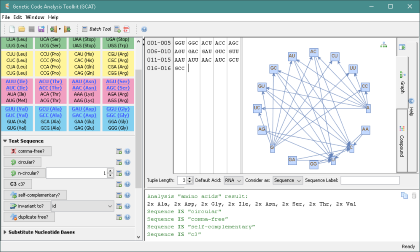

The Genetic Code Analysis Toolkit (GCAT) features a comprehensive editor to edit and analyze genetic code sequences and sets (codes).
The user interface (UI) is separated into five areas with different purposes:
On top of the tool, all operations in the menu- and toolbar are accessible.
The Toolkit features an own file format (.gen) to store and load files containing genetic code sequences. Using the import functionality you can open FASTA files (.fasta) or import genetic sequences from GenBank.

As an example for the tools efficency, many researchers argue that the so-called RNY-primeval code (R = purine, Y = pyrimidine and N = purine or pyrimidine) X = {GGT, GGC, ACT, ACC, AGC, AGT, GAC, GAT, GTC, GTT, AAT, ATT, AAC, ATC, GCT, GCC} which encodes 8 amino acids Gly, Thr, Asp, Ser, Val, Asn, Ile, and Ala might be a possible ancestor (primordial) code from which the standard genetic code could originate (Eigen 1978, Jolivet 2001). This code is circular, even comma-free and C³, and self-complementary as well. With this tool, it only takes a few seconds to test all of these properties — a task that would be very cumbersome to perform manually. The above figure shows the output of this example.